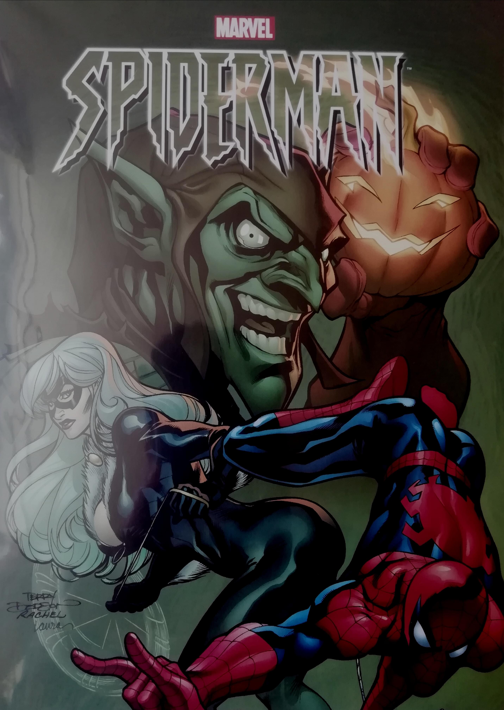

Spiderman entre los muertos
Peter Parker, Spiderman, lidia con el secuestro de su tía May, porque su identidad secreta fue descubierta por alguno de sus peores enemigos. Esta emocionante historia está compuesta por 12 partes, las cuales están incluidas. en este tomo.
